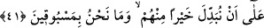

mânâsına gelir. Kâşifî şöyle demiştir: “Kâfirlerin dediği gibi değildir. Yemin ederim
ki...”
“Doğuların ve batıların Rabbi” “Doğu” ve “batı” kelimelerinin çoğul getirilmesinin
sebebi, bunlarla senenin her günü meydana gelen doğu ve bâtının kasdedilmesi olabilir.
Buna göre yaz ve kış mevsimlerinde her birinin yüz seksen doğusu ve bir o kadar da
batısı olur.
Doğuların Rabbidir ki güneşi vardır ve onu her gün başka bir noktadan doğdurur.
Batıların Rabbidir, güneşinin bir yolu vardır ve her gün bir başka noktadan batar.
Veya murâd, bütün yıldız ve gezegenlerin doğu ve batılarıdır. Zira onlardan her birinin
ufuk dâiresinde farklı doğma ve batma noktaları vardır.
Ya da doğudan maksad her peygamberin dâvetinin ortaya çıkışı, batıdan maksad ise
vefat etmesidir.
Veya murâd, hidâyetlerin ve Cenâb-ı Hakk’ın inâyetinden mahrûmiyetlerin
çeşitleridir.
41. Şüphesiz onların yerine daha iyilerini getirmeye (kâdiriz). Ve kimse bizim
önümüze geçemez.
“Gücümüz yeter, kâdiriz” ifâdesi, yukarıda geçen yeminin cevabıdır. Yâni
“Doğuların ve batıların Rabbine yemîn olsun ki şüphesiz onların yerine daha
iyilerini getirmeye Bizim gücümüz yeter.” Normalde kelime “onları değiştirmeye”
şeklinde olması gerekirken, ilk mef’ûl olan “hum: onlar” zamiri, mâlum olduğu için
hazfedilmiştir. “Hayran” kelimesi ise ikinci mef’ûldür ve “sâdece İslâm’a girip
zâhiren teslim olanlardan daha fazîletli, daha üstün mü’minler getiririz” mânâsına gelir.
Zira müşriklerde hiç hayır yoktur ki müşriklerden daha hayırlı bir kavim getirileceği
ifâde edilsin! Yâni “işledikleri cinâyetler sebebiyle biz onları bir çırpıda helâk etmeye
ve yerlerine onların sıfatlarında olmayan kimseler yaratmaya kadiriz.” Bu tebdil
gerçekleşmemiştir, Allah Teâlâ bunu, îman etsinler diye tehdîd olarak zikretmiştir.
Bâzılarına göre Cenâb-ı Hak o kâfirlerin yerine ensâr ve muhacirleri getirmiştir.
“Ve kimse bizim önümüze geçemez.” Yâni eğer biz yukardaki tebdili dilersek kimse
bu konuda bizi yenip buna mâni olamaz. Fakat yüksek hikmetlere dayalı olan irâdemiz,
onlara verilecek cezânın tehir edilmesini gerektirmiştir. Diğer bir ifâdeyle, kimse bizim
önümüze geçemez, bir işi irâde ettiğimizde artık onu izhar etme husûsunda kimse bize
mâni olamaz.
Bâzıları da “âciz bırakamaz” mânâsı vermişlerdir. Zira bir şeye ulaşmak üzere gayret
ederken başkası tarafından geçilen kimse acze düşmüş demektir.